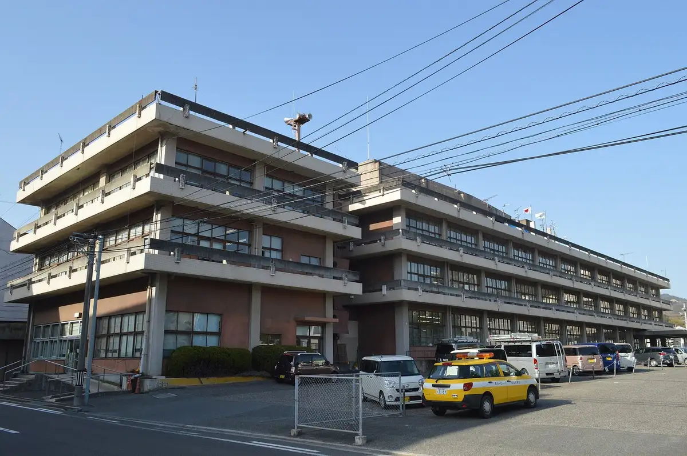
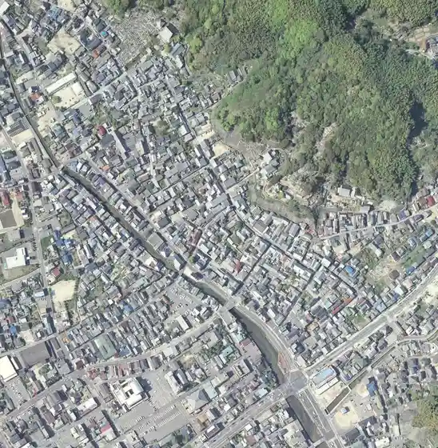
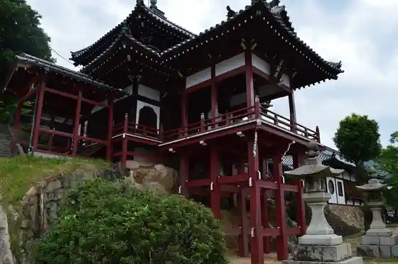
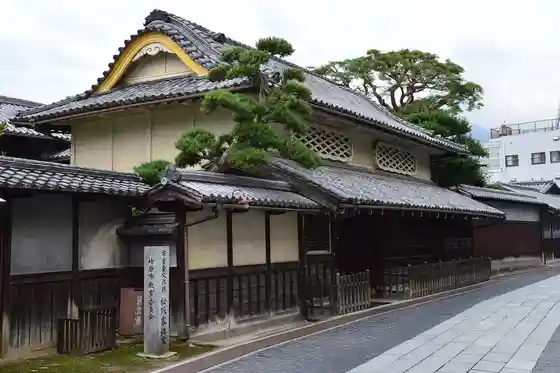

Takehara
Takehara · Hiroshima
Takehara
Highlighted on the Hiroshima map.

Stay
Guriinsukai Hotel Takehara
NIPPONIA HOTEL Takehara Seien Town
Hotel Dai Ko En
Tabist Setochi no Yado Takehara Shiisaido
Kyuka Village Okuno Shima
Ko Minka Yado Akari Tadanomi / Minpaku
Setochi Resort Vira
Dining
Resutoran'appuruminto
Ruan NIPPONIA HOTEL Takehara Seien Town
Kiraku Ken
Teppanyaki Chiyo
Sabo
Takehara Kantorii Club Resutoran
Kitchin & Kafe GUU
Hanashu
Ton Kichi
Kanda Mochi Mise
Nakao Jozo
MOMOKICHI Iori
CAFE-BY-THE-SEA
Kamaboko no Kin Matsu
NIPPONIA HOTEL Takehara Seien Town
O Konomi Takiyama Chan
Onsen
Tabist Setochi no Yado Takehara Shiisaido Public Bath
Kyuka Village Okuno Shima Public Bath
Hotel Dai Ko En Public Bath
Sights
Takehara Streetscape Hozon Chiku

Seiho Tera Fumyo Kaku

Matsusaka Tei

Okuno Shima
Tadanomi Minato